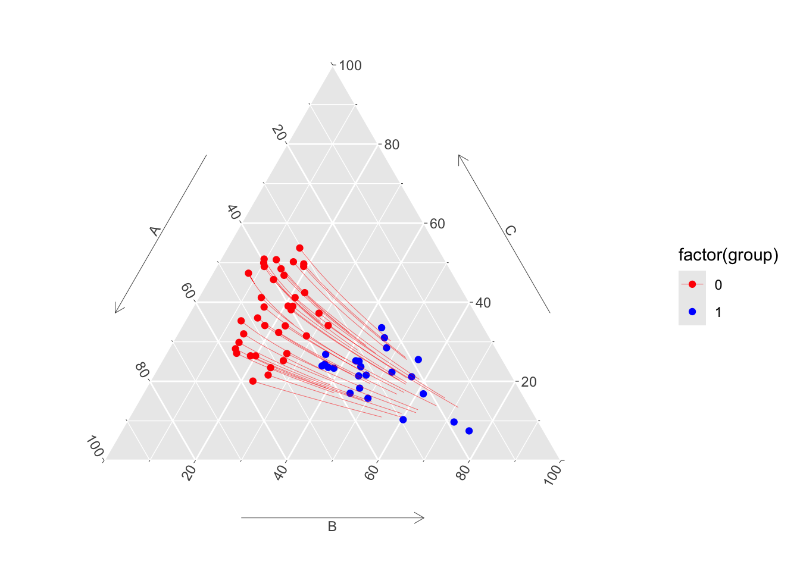

remotes::install_github(repo = "fer-agathe/transport-simplex")
library(transportsimplex)Optimal Transport on Categorical Data for Counterfactuals using Compositional Data and Dirichlet Transport
Arthur Charpentier ![]()
Agathe Fernandes Machado
Ewen Gallic
Introduction
This ebook provides replication codes for the article titled ‘Optimal Transport on Categorical Data for Counterfactuals using Compositional Data and Dirichlet Transport.’
Paper on arXiv
The paper is available on arXiv:
Note
All the codes are written in R.
Scripts
The scripts associated with this ebook are available in the script folder on the GitHub repository of this paper:
https://github.com/fer-agathe/transport-simplex/tree/main/replication-paper/scripts
Abstract
Recently, optimal transport-based approaches have gained attention for deriving counterfactuals, e.g., to quantify algorithmic discrimination. However, in the general multivariate setting, these methods are often opaque and difficult to interpret. To address this, alternative methodologies have been proposed, using causal graphs combined with iterative quantile regressions Plečko and Meinshausen (2020) or sequential transport Fernandes Machado, Charpentier, and Gallic (2025) to examine fairness at the individual level, often referred to as “counterfactual fairness.” Despite these advancements, transporting categorical variables remains a significant challenge in practical applications with real datasets. In this paper, we propose a novel approach to address this issue. Our method involves (1) converting categorical variables into compositional data and (2) transporting these compositions within the probabilistic simplex of \(\mathbb{R}^d\). We demonstrate the applicability and effectiveness of this approach through an illustration on real-world data, and discuss limitations.
Keywords: Fairness; Causality; Tractable probabilistic models; Simplex; Optimal Transport
Outline
This ebook contains three chapters:
- Chapter 1 Toy dataset: Presentation of the methods, step by step, on a toy dataset.
- Chapter 3 Adult Dataset: Illustration of estimation of counterfacutals on the German Credit dataset.
- Chapter 2 German Credit Dataset: Illustration of estimation of counterfacutals on the adult dataset.
R package
To facilitate building on our approach, we put the main functions in an R package, available on GitHub.
The package needs to be installed:
Here is a small example showing how to use the main functions: transport_simplex() (method 1) and wasserstein_simplex() and counterfactual_w() (method 2).
# First three columns: probabilities of being of class A, B, or C.
# Last column: group (0 or 1)
data(toydataset)
X0 <- toydataset[toydataset$group == 0, c("A", "B", "C")]
X1 <- toydataset[toydataset$group == 1, c("A", "B", "C")]
# Method 1:
# --------
# Transport only, from group 0 to group 1, using centered log ratio transform:
transp <- transport_simplex(X0 = X0, X1 = X1, isomorphism = "clr")
# If we want to transport new points:
new_obs <- data.frame(A = c(.2, .1), B = c(.6, .5), C = c(.2, .4))
# transport_simplex_new(transport = transp, newdata = new_obs)
# If we want to get interpolated values using McCann (1997) displacement
# interpolation: (here, with 31 intermediate points)
transp_with_interp <- transport_simplex(
X0 = X0, X1 = X1, isomorphism = "clr", n_interp = 31
)
# interpolated(transp_with_interp)[[1]] # first obs
# interpolated(transp_with_interp)[[2]] # second obs
# And displacement interpolation for the new obs:
transp_new_obs_with_interp <- transport_simplex_new(
transport = transp, newdata = new_obs, n_interp = 5
)
# interpolated(transp_new_obs_with_interp)[[1]] # first new obs
# interpolated(transp_new_obs_with_interp)[[1]] # second new obs
# Method 2
# --------
# Optimal Transport using Linear Programming:
mapping <- wasserstein_simplex(as.matrix(X0), as.matrix(X1))
# The counterfactuals of observations of group 0 in group 1
counterfactuals_0_1 <- counterfactual_w(mapping, X0, X1)Code to create the Figure.
library(ggtern)
library(ggplot2)
# Format path
transp_val_clr_inter_0_1 <-
interpolated(transp_with_interp) |>
purrr::list_rbind(names_to = "id_obs") |>
dplyr::left_join(
toydataset |>
dplyr::filter(group == 0) |>
dplyr::mutate(id_obs = dplyr::row_number()) |>
dplyr::select(id_obs, group),
by = "id_obs"
)
ggtern(
data = toydataset,
mapping = aes(x = A, y = C, z = B, colour = factor(group))
) +
geom_point() +
geom_line(
data = transp_val_clr_inter_0_1, linewidth = .1,
mapping = aes(group = id_obs)
) +
scale_colour_manual(values = c("0" = "red", "1" = "blue"))
